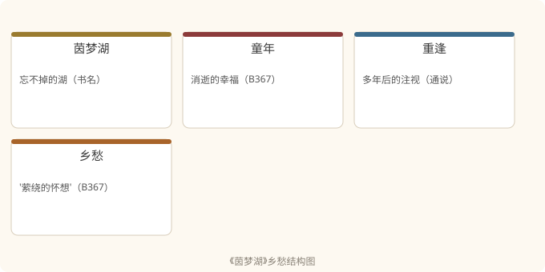

茵梦湖
一、基本信息
| 作者 | 特奥多尔·施托姆 |
|---|---|
| 成书/出版 | 1850年（Britannica B367：Immensee (1850)——首部中篇、最受欢迎） Theodor Woldsen Storm — Encyclopaedia Britannica（百科全书） |
| 国别/地区 | 德国 |
| 时代 | 近代 · 19世纪50年代初 |
| 体裁 | 中篇小说 |
| 语言 | 德语 |

《茵梦湖》乡愁结构图（主题·结构图）
二、创作背景
Britannica（B367）：'a moving story of the vanished happiness of childhood'——'a haunting nostalgia'——首部中篇与最受欢迎的故事。
Britannica（B367）：'an outstanding representative of German poetic Realism'。
题材（通说待核）：莱因哈德与伊丽莎白的童年恋歌——多年后的茵梦湖畔重逢。
三、内容脉络
（通说待核）框架叙事：老人回忆青年时代的湖畔夏日。
（通说待核）'茵梦湖'：忘不掉的湖与歌。
四、主要人物表
| 人物 | 身份 | 说明 |
|---|---|---|
| 莱因哈德 | 老学者（回忆者） | （通说待核，B367未载） |
| 伊丽莎白 | 初恋 | （通说待核，B367未载） |
五、主题与艺术特点
- '消逝的童年幸福'（B367：vanished happiness of childhood）。
- '萦绕的乡愁'（B367：haunting nostalgia）。
- 框架叙事的时间结构（B367：frame-narrative——搜索口径）。
六、影响与评论
- Britannica：'his most popular story'（B367 搜索口径）。
Theodor Woldsen Storm — Encyclopaedia Britannica（百科全书） - Britannica：诗意现实主义代表（B367）。
Theodor Woldsen Storm — Encyclopaedia Britannica（百科全书）
七、阅读建议
难点
- 框架叙事的时间层。
- 民歌穿插（《荷花》等——通说待核）。
- 《茵梦湖》中译本（人民文学/上海译文等——通说待核）。
- 德文原版（公有领域）。
施托姆首选；与《白马骑士》对读。
八、待核实
- 莱因哈德/伊丽莎白人名核对（B367未载）。
- 1850年发表细节待核。
- 英文译名 Immensee (Eng. trans. 1863) 待核。